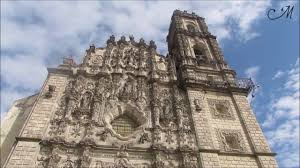

El templo de San Francisco Javier forma parte del actual Museo Nacional del Virreinato y antiguo Colegio Jesuita de San Francisco Javier, ubicado en Tepotzotlán, Estado de México.
Ejemplo del Barroco novohispano, la fachada externa consta de dos cuerpos y un remate, tallados en piedra de chiluca gris. En el cuerpo inferior se observan esculturas que representan la gloria del matrimonio cristiano y a los cuatro evangelistas. En el segundo cuerpo se distingue la figura de San Francisco Javier y otros santos de las otras órdenes religiosas evangelizadoras en Nueva España. Y en el remate a San Miguel Arcángel y a la Virgen María. Esta belleza arquitectónica se le atribuye a los arquitectos Diego de la Sierra y José Durán, y su fachada es obra del arquitecto Ildefonso de Iniesta.
El interior del templo fue revestido con diez retablos dorados diseñados y elaborados por Higinio de Chávez y Miguel Cabrera a mediados del siglo XVIII, entre los cuales se encuentra uno dedicado a San Francisco Javier, otro a la Virgen de Guadalupe, a San Ignacio de Loyola, a la pasión de Jesucristo, San Estanislao de Kostka, San Luis Gonzaga, San Juan Nepomuceno, entre otros. Esta riqueza en retablos es respaldada por murales y enormes lienzos firmados también por Miguel Cabrera, que representan a Dios Padre, el Espíritu Santo, El Purgatorio, y el Patrocinio De la Virgen a los Jesuitas.
El Antiguo Colegio de San Francisco Javier en Tepotzotlán fue uno de los más de 60 sitios individuales inscritos en 2010 como Patrimonio Cultural de la Humanidad por la UNESCO, parte del Camino Real de Tierra Adentro (n.º ref. 1351-038).
